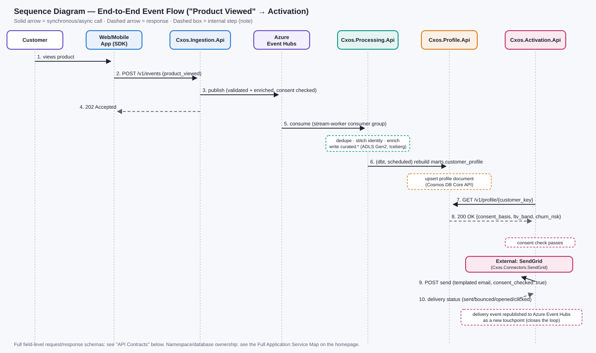
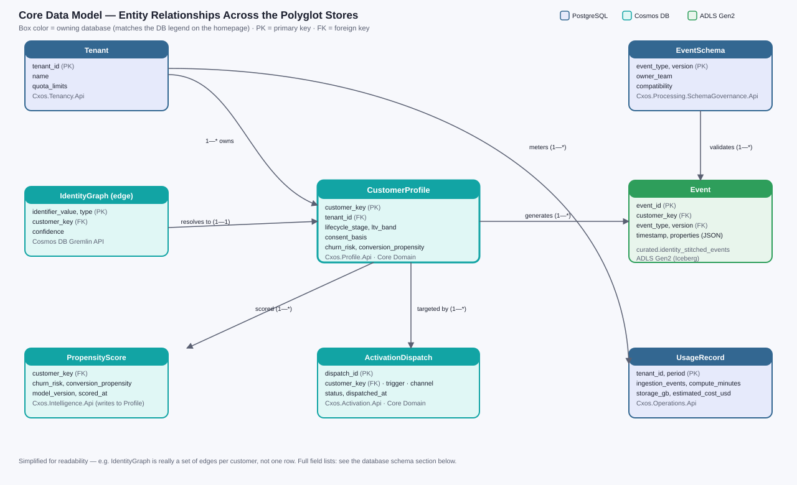

CXOS — Low-Level Design (LLD)
The implementation-grade companion to the BRD (business requirements) and the six module pages (conceptual architecture): concrete sequence flows, database schemas, API contracts, and deployment topology — the level of detail an engineer needs to build against or review a pull request with.
📚 Purpose & Scope
The BRD answers why CXOS exists and what it must guarantee; the six module pages answer what each stage does conceptually; the BRD's Microservices catalog answers which service owns what. This document answers how a single request or event actually moves through the system, byte for byte — the sequence of calls, the shape of the data at each hop, the exact schema each store persists, and the topology it all runs on. It's scoped to the platform's Core Domain path (ingestion through activation, the flow used as the running example throughout) rather than re-deriving low-level detail for all 92 detail pages — each of those already documents its own Technical Overview, artifact payload, and Services Consumed.
Sequence Diagram: End-to-End Event Flow
A single "Product Viewed" event, from the browser to a delivered activation email — click to zoom.

Source diagram: doc/img/lld-sequence-event-flow.svg
Step-by-step
- 1–2. Browser SDK batches and POSTs the event to
Cxos.Ingestion.Apivia the sharedCxos.Ingestion.Clientcontract - 3–4. Ingestion validates, enriches, and checks consent inline, publishes to Azure Event Hubs, and returns
202 Acceptedimmediately — the client never waits on downstream processing - 5.
Cxos.Processing.Api's Stream Worker consumes the event on its own consumer group, deduplicates it, stitches it to an identity, and writes it to the curated zone (ADLS Gen2, Iceberg) - 6. On the next scheduled dbt run,
marts.customer_profileis rebuilt andCxos.Profile.Apiupserts the resulting document into Cosmos DB - 7–8. When a later trigger fires,
Cxos.Activation.Apireads the profile for consent and segment before deciding to send anything — it never sends blind - 9–10. The dispatch goes out through
Cxos.Connectors.SendGrid; the delivery status is republished onto Event Hubs as a new touchpoint, closing the loop back into the same pipeline
🛠 Component Design — Cxos.Ingestion.Api Internal Layering
One representative service, worked through down to class responsibilities, so the pattern is clear enough to replicate for any other Cxos.*.Api. Every service in the BRD's DDD catalog follows the same four-layer shape (Domain has no dependencies on anything; Infrastructure implements the interfaces Domain declares — classic dependency inversion, not a Domain that reaches out to Azure SDKs directly).
| Layer | Representative Classes | Responsibility |
|---|---|---|
| Api | IngestionController, EventDto |
ASP.NET Core controller: POST /v1/events, POST /v1/events/batch. Maps HTTP → command, never contains business logic. |
| Application | IngestionService, ValidateEventHandler, EnrichEventHandler, ConsentCheckHandler, PublishEventHandler |
Orchestrates the use-case pipeline in order; each handler is independently unit-testable and has one job. |
| Domain | Event, EventSchema, ConsentBasis (entities/value objects); IEventValidator, IConsentPolicy, IEventPublisher (interfaces) |
Pure business rules and contracts. No Azure SDK references, no I/O — fully unit-testable without a running dependency. |
| Infrastructure | EventHubsPublisher : IEventPublisher, RedisEnrichmentCache, SchemaRegistryValidator : IEventValidator, KeyVaultSecretProvider |
Implements Domain's interfaces against real Azure services. Swappable in tests via the interfaces above (e.g. an in-memory publisher for integration tests). |
Dependency Injection Wiring (Program.cs, abridged)
services.AddScoped<IEventValidator, SchemaRegistryValidator>();
services.AddScoped<IConsentPolicy, ConsentEnforcementPolicy>();
services.AddScoped<IEventPublisher, EventHubsPublisher>();
services.AddScoped<IngestionService>();
// IngestionService constructor depends only on the interfaces above —
// it has no idea Event Hubs or Redis exist.
public IngestionService(IEventValidator validator, IConsentPolicy consent, IEventPublisher publisher) { ... }
Core Data Model
Entity relationships across the polyglot stores — click to zoom.

Source diagram: doc/img/lld-entity-relationship.svg
🗃️ Database Schema Detail
One concrete schema artifact per store in the polyglot persistence design — matches the database assignments already shown on the homepage's Full Application Service Map.
PostgreSQL — event_schema (Cxos.Processing.SchemaGovernance)
CREATE TABLE event_schema (
event_type text NOT NULL,
version int NOT NULL,
owner_team text NOT NULL,
compatibility text NOT NULL CHECK (compatibility IN ('backward','forward','full')),
pii_fields text[] DEFAULT '{}',
registered_at timestamptz NOT NULL DEFAULT now(),
PRIMARY KEY (event_type, version)
);
CREATE INDEX idx_event_schema_owner ON event_schema (owner_team);
Cosmos DB Core API — CustomerProfile document (Cxos.Profile.Api)
{
"id": "cust_004821",
"partitionKey": "tenant_northwind",
"tenant_id": "tenant_northwind",
"lifecycle_stage": "active",
"ltv_band": "gold",
"consent_basis": { "marketing": true, "analytics": true },
"churn_risk": 0.12,
"conversion_propensity": 0.34,
"model_version": "churn_risk_v4",
"updated_at": "2026-08-02T06:00:00Z",
"_etag": "\"a1b2c3d4\""
}
// Partitioned by tenant_id — keeps every tenant's profiles co-located
// and enforces the isolation boundary Cxos.Tenancy.Api defines.
Cosmos DB Gremlin API — IdentityGraph traversal (Cxos.Profile.Api)
// Add a resolved edge
g.V().has('customer', 'customer_key', 'cust_004821').as('c')
.addE('resolves_to').to(
g.addV('identifier').property('value', 'dev_88f2').property('type', 'device_id')
).from('c')
// Resolve any known identifier back to its canonical customer
g.V().has('identifier', 'value', 'dev_88f2').out('resolves_to').values('customer_key')
Azure Cache for Redis — key patterns (Cxos.Ingestion.Api, Cxos.Intelligence.Api)
enrich:geo:{ip_hash} TTL 24h -- geo/device enrichment lookup cache
idem:event:{event_id} TTL 15m -- idempotency/dedup key at ingestion
profile:hot:{customer_key} TTL 5m -- hot-key read-through cache in front of Cosmos DB
query:{metric_hash}:{dim_hash} TTL varies -- semantic-layer query-result cache, invalidated on dbt run
ADLS Gen2 (Iceberg) — curated table DDL (Cxos.Foundation.Api)
CREATE TABLE curated.identity_stitched_events (
event_id string,
customer_key string,
event_type string,
event_version int,
event_timestamp timestamp,
properties map<string, string>
)
USING iceberg
PARTITIONED BY (days(event_timestamp))
TBLPROPERTIES ('write.format.default'='parquet');
🔗 API Contracts
Request/response shape for the three calls in the sequence diagram above. Every response follows the same error envelope on failure.
Command POST /v1/events — Cxos.Ingestion.Api
POST https://ingest.cxos.io/v1/events
Authorization: Bearer <client-token>
Content-Type: application/json
Idempotency-Key: c2a9f1e0-8b3d-4e7a-9c1f-2d6a8e0b4c73
{
"event": "product_viewed",
"user_id": "cust_004821",
"context": { "channel": "web" },
"properties": { "sku": "sku-1029", "price": 2499 }
}
202 Accepted
{ "event_id": "c2a9f1e0-8b3d-4e7a-9c1f-2d6a8e0b4c73", "accepted_at": "2026-08-02T06:00:00Z" }
Query GET /v1/profile/{customer_key} — Cxos.Profile.Api
GET https://api.cxos.io/v1/profile/cust_004821
Authorization: Bearer <service-token>
200 OK
{
"customer_key": "cust_004821",
"lifecycle_stage": "active",
"ltv_band": "gold",
"churn_risk": 0.12
// fields the caller isn't entitled to are omitted, not nulled
}
404 Not Found
{ "error": { "code": "PROFILE_NOT_FOUND", "message": "No profile for customer_key", "trace_id": "..." } }
Command POST /v1/activate — Cxos.Activation.Api
POST https://api.cxos.io/v1/activate
Authorization: Bearer <service-token>
{
"customer_key": "cust_004821",
"trigger": "cart_abandonment",
"channel": "email",
"template_id": "cart_recovery_v3"
}
202 Accepted
{ "dispatch_id": "disp_9931", "routed_to": "Cxos.Connectors.SendGrid" }
409 Conflict
{ "error": { "code": "CONSENT_DENIED", "message": "Customer has not consented to marketing", "trace_id": "..." } }
Deployment Architecture
Azure infrastructure topology, by trust/network zone — click to zoom.
![Deployment topology diagram: client apps go through Azure API Management into an AKS cluster running the always-on Cxos APIs and Azure Container Apps running the Processing worker and connector jobs; both compute zones publish through Azure Event Hubs and Service Bus into the polyglot data zone (Cosmos DB, PostgreSQL, Redis, ADLS Gen2, Data Explorer, Purview); a cross-cutting Security & Ops band underneath provides Key Vault, Azure AD/ADFS, Application Insights, and Azure Monitor to every compute node.](../img/lld-deployment-topology.svg)
Source diagram: doc/img/lld-deployment-topology.svg
⚠️ Error Handling & Resiliency
| Failure Scenario | Strategy | Owner |
|---|---|---|
| Downstream dependency transient failure (e.g. Cosmos DB throttled) | Polly exponential backoff with jitter, 3 attempts, then surface as 503 rather than hang | Every Cxos.*.Infrastructure layer |
| Repeated dependency failure past retry budget | Circuit breaker opens for a cooldown window; health check reflects it so orchestration can stop routing traffic | Every Cxos.*.Api |
| Duplicate event delivery (at-least-once messaging) | Idempotency key (event_id) checked against Redis before processing; safe to retry blindly | Cxos.Ingestion.Api, Cxos.Processing.Api |
| Event fails schema validation | Routed to a dead-letter Event Hubs topic with the validation error attached, not silently dropped | Cxos.Ingestion.Api |
| Downstream call exceeds latency budget | Per-call timeout (typically 2–5s) fails fast rather than holding a connection open; caller decides fallback | Every Cxos.*.Api |
| Activation dispatch fails mid-send | Dead-lettered for manual review after backoff exhausted — never silently dropped, per BR-6.1 | Cxos.Activation.Api |
🔐 Security Design Detail
Token issuance and validation for a service-to-service call — the same flow every Cxos.*.Api enforces via shared middleware, per Cxos.Security.Api in the Full Application Service Map.
- 1. Caller authenticates against Azure AD (Entra ID) — internal/employee callers federate through ADFS from on-prem AD; customer-facing callers use Azure AD B2C, kept entirely separate
- 2. Azure AD issues a short-lived JWT access token scoped to the caller's role/app registration
- 3. Azure API Management validates the token signature and expiry at the edge before a request ever reaches a service
- 4. The receiving
Cxos.*.Api's shared authentication middleware re-validates the token and resolves roles/attributes for RBAC/ABAC checks (Cxos.Foundation.Api's Access Control policies) - 5. Service-to-service calls inside the cluster use managed identities, not shared secrets — no long-lived credential to leak
- 6. Every access decision (allow/deny, masked fields) is logged to the write-once Audit Logs store, per Governance & Security
📈 Observability Design
One correlation ID is generated at the edge (Azure API Management) and propagated via the X-Correlation-Id header through every hop in the sequence diagram above, so a single request can be traced end to end in Application Insights regardless of how many services it touched.
| Log Field | Purpose |
|---|---|
timestamp | UTC, ISO 8601 |
correlation_id | Propagated from the originating request; the join key across every service's logs |
service | The emitting Cxos.*.Api namespace |
tenant_id | For per-tenant filtering and the Usage & Billing meter |
customer_key_hash | Hashed, never the raw identifier — logs are not a PII store |
severity | Trace / Info / Warning / Error / Critical |
message | Structured, not string-interpolated — queryable in Application Insights/Azure Monitor |